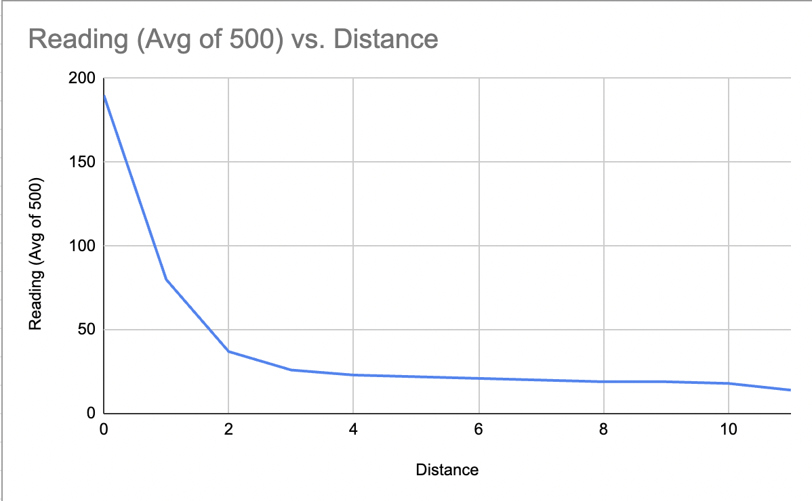
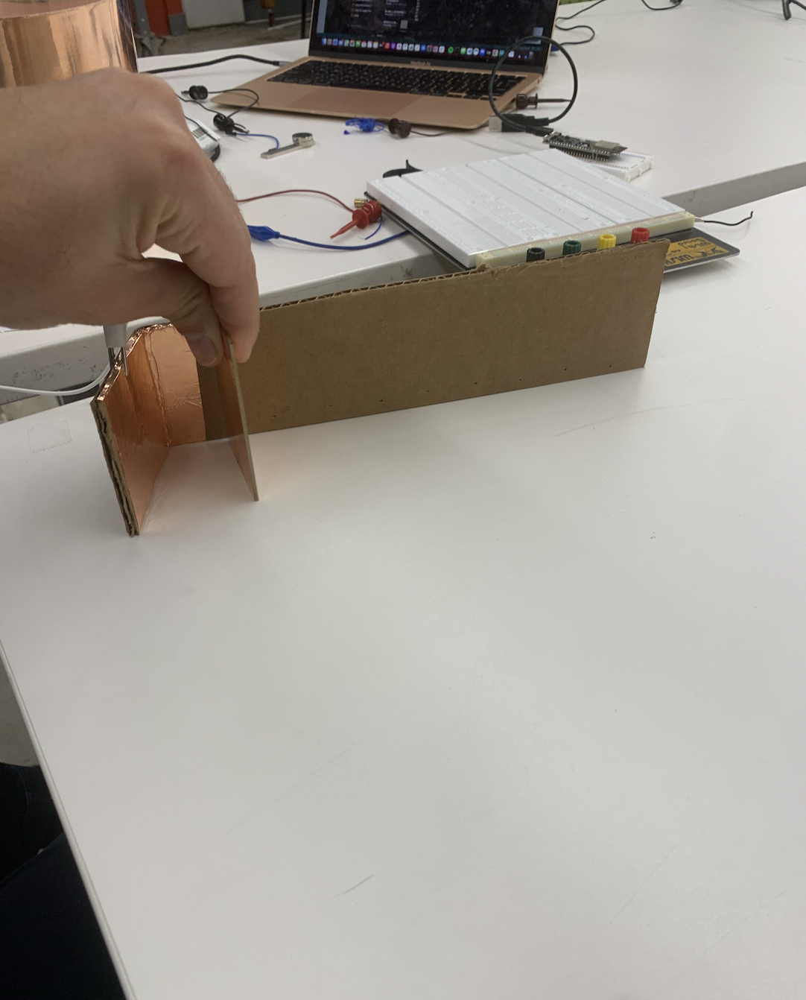
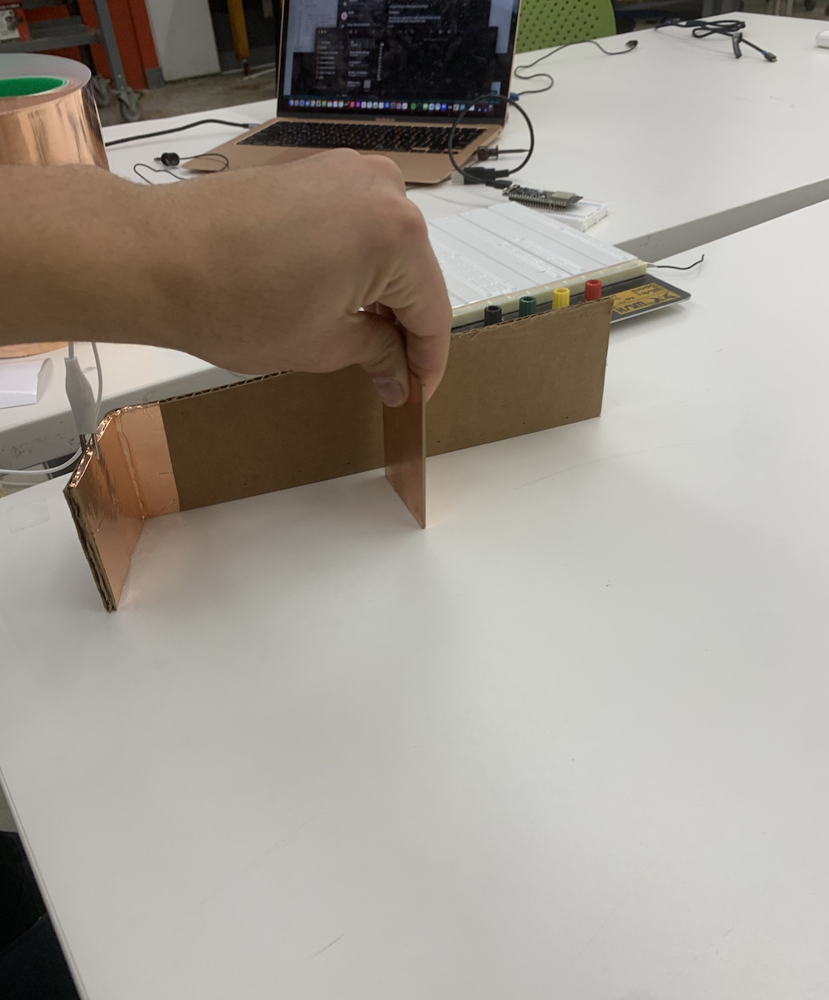

This week was about capacitive touch sensors. Making a capacitive touch sensor using an Arduino and a piece of copper tape is a relatively simple process. First, connect the copper tape to an input pin on the Arduino board via a resistor. Then, connect a second wire from a different Arduino's pin to the copper tape. Next, program the Arduino to read the input from the copper tape and detect changes in capacitance when someone touches the tape. This can be done by using the CapacitiveSensor library, which comes pre-installed with the Arduino IDE. The library allows the Arduino to measure the capacitance of the copper tape and trigger an action when a touch is detected. This simple setup can be used for a variety of projects, such as creating touch-sensitive buttons or switches, or even a proximity sensor. I decided to try the later. Namely, I wanted to make a crude distance measuring device. I did this by measuring out distance on a piece of carbdoard with copper tape on the bottom. I used a series of 4 1M ohm resisotrs since the higher the resistor the more senstivie the sensor is. I then plotted the values printed from the arduino against the actual distance away my hand was as shown here.
As you can see, you wouldnt be able to directly interpolate this as disance. Namely, you'd need some functional that looks exponential or logarithmic rather to turn measurements into distances. This is because the sensor meassurement doesn't seem to increase linearly in the size of the distance between the sensor in my hand. Very cool!
 
#include
int N_samples = 100;
int ag = 0;
CapacitiveSensor cs = CapacitiveSensor(4,8); // 1M resistor between pins 4 & 8, pin 8 is sensor pin, add a wire and or foil
void setup()
{
cs.set_CS_AutocaL_Millis(0xFFFFFFFF);// turn off autocalibrate on channel 1 - just as an example
Serial.begin(9600);
pinMode(7,OUTPUT);
}
void loop()
{
ag = 0;
for(int i = 0; i
I then did the same thing with a photoresistor, thinking that it would also give me a very rough approximation of distance as I bring my hand closer and block out more and more light. I was right! I then plotted the values printed from the arduino against the actual distance away my hand was as shown here.
//Constants
const int pResistor = A0; // Photoresistor at Arduino analog pin A0
//Variables
int value;
void setup(){
pinMode(ledPin, OUTPUT);
}
void loop(){
value = analogRead(pResistor);
Serial.println(value);
delay(500); //Small delay
}